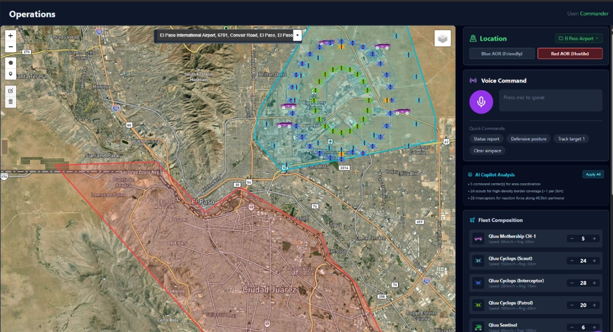

Your infrastructure was never designed to defend itself. QLUUos changes that. A sovereign AI platform that detects, tracks, and neutralizes unauthorized drone threats, and gets smarter every day it's deployed.
"Deploy once. Defend forever. Improve continuously."
Unauthorized drones have breached power substations, disrupted airport operations, and surveilled water treatment facilities across the country. The question is no longer whether your infrastructure will be targeted. It's whether you'll know when it happens. Most operators today have zero detection capability and zero response protocol.
$200
Cost of a consumer drone
A $200 off-the-shelf drone can shut down a $2B power plant. The economics of attack have flipped.
0
Detection systems at most facilities
Most critical infrastructure operators have no drone detection capability. They find out about incursions from news reports.
Weekly
Threat landscape changes
New drone models, new flight patterns, new tactics. Static defenses are obsolete before they're installed.
Substations and natural gas pipelines are highly vulnerable to localized drop-payload attacks. QLUUos provides a 5km detection perimeter and early-warning alerts before a threat crosses the fenceline.
Treatment plants are exposed to chemical tampering and unauthorized surveillance. QLUUos runs 24/7 autonomously, requiring zero dedicated operator headcount to maintain secured airspace.
Rogue drones ground thousands of flights annually. The system identifies flight patterns to distinguish between authorized commercial inspections and deliberate unauthorized incursions in real-time.

"Most defense systems are frozen in time. QLUUos improves while you sleep."
QLUUos is not a static alarm system. The Commander QLUU World Model predicts threat trajectories 2 to 5 seconds ahead, while the War Planner Agent generates ranked response options in under a second. Every engagement, simulated or real, feeds back into the system. The more it operates, the harder it is to beat.
"Your facility is protected the day QLUUos goes live."
QLUUos is a software platform that deploys on your existing sensors and infrastructure. No proprietary hardware required. No 12-month installation timeline. No vendor lock-in. Dockerized, Kubernetes-ready, and compatible with industry-standard protocols. Your facility is protected the day it goes live.
Most AI defense systems rely on cloud compute, introducing latency and massive security vulnerabilities. QLUUos runs on the edge. The Commander World Model and War Planner Agent execute 100% locally on your secure network.
Not an API wrapper calling out to third-party language models. Fully sovereign. Engineered to support complete physical isolation for highly classified or remote operating environments.
Zero
Cloud APIs
Docker
Container-ready
K8s
Kubernetes-native
99.7%
System uptime
"You don't need to deploy software to get answers."
Vulnerability Assessment
Complete three medium Sea, Air, and Land Viability and Vulnerability assessments of your Area of
Operations (AO) and facilities. Scaled identification of sensor gaps, blind spots, and unprotected
approach vectors. Delivered as an actionable report with threat modeling and mitigation matrix.
Complete airspace analysis of your facility. Identification of sensor gaps, blind spots, and unprotected approach vectors. Delivered as an actionable report with threat modeling.
Executive-level strategic assessment with prioritized hardening recommendations, cost-benefit analysis, and phased implementation roadmap. Built for board-level presentations.
Response protocols, escalation procedures, and coordination templates for your security team. Generated by the same War Planner Agent that runs live intercept operations.